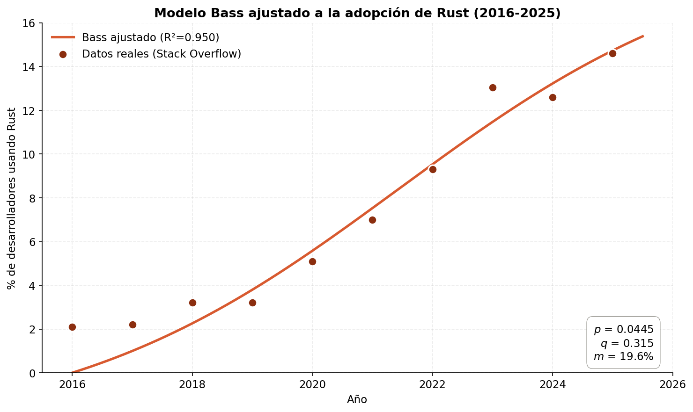
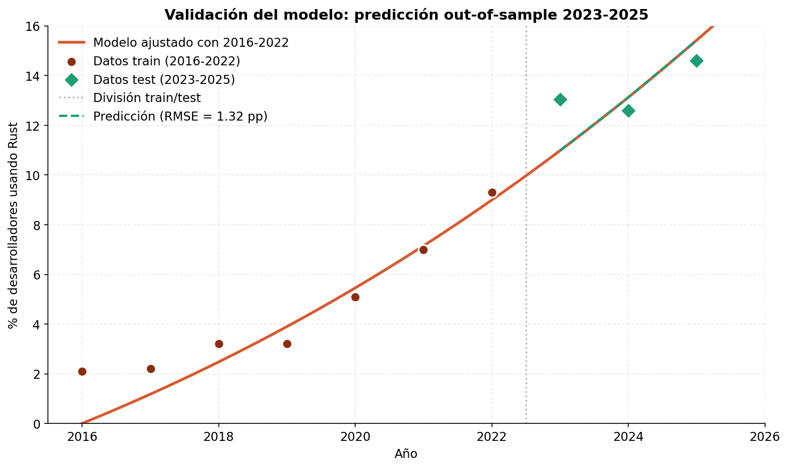
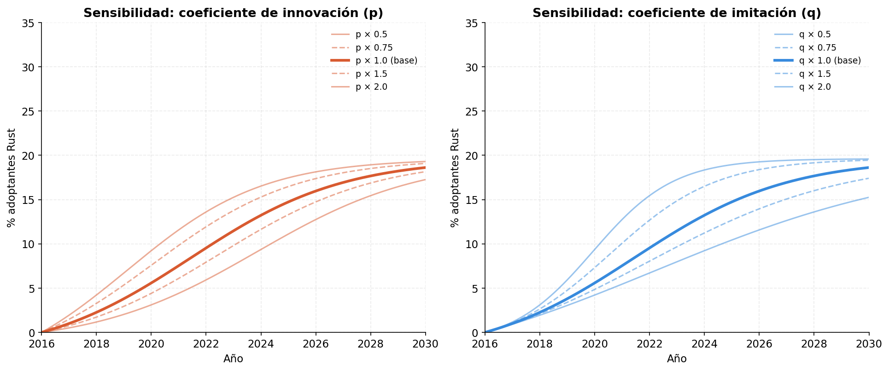
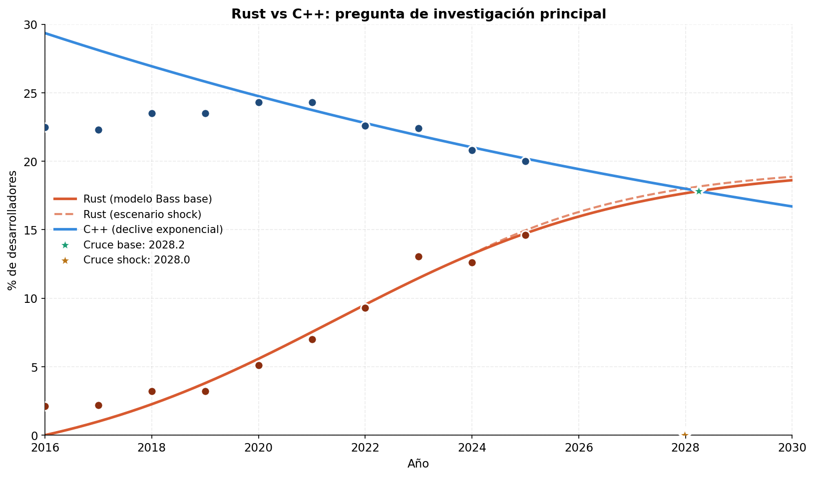

Etapa 01
Problema
Definición del fenómeno, objetivos y pregunta de investigación.
Trabajo Final Integrador. Análisis cuantitativo del proceso de migración de C++ a Rust con un modelo de difusión de Bass ajustado contra datos reales del período 2016–2025.
La industria del software vive una migración progresiva de C++ hacia Rust, impulsada por la demanda de seguridad de memoria. El proceso ya no es teórico: tiene fechas, hitos y datos verificables.
Estándar de facto en sistemas críticos durante 40 años. Performance excepcional y control total de memoria, pero con seguridad delegada al programador. El 70% de las vulnerabilidades en software de Microsoft proviene de errores de manejo de memoria.
Memoria segura por diseño: el compilador previene los errores comunes de C++ sin perder performance. Adoptado por Linux, Android, Microsoft, Cloudflare y AWS. Sistema de ownership único en su categoría.
La pregunta no es si Rust va a reemplazar a C++, sino cuándo, qué tan rápido y qué condiciones hacen que la transición se acelere. Este trabajo aborda esas tres preguntas con un modelo matemático específico.
El trabajo sigue las cinco etapas definidas en la consigna del TFI. Cada etapa está atada a una decisión técnica concreta y documentada.
Una sola ecuación diferencial, tres parámetros, capacidad de explicar fenómenos de adopción tecnológica desde Netflix hasta los smartphones. Tiene solución analítica, lo que simplifica el ajuste por mínimos cuadrados.
Dos validaciones independientes: la bondad del ajuste contra todos los datos (R² = 0.95) y la capacidad predictiva out-of-sample (RMSE = 1.32 pp prediciendo 2023–2025 con datos hasta 2022).


Los tres parámetros del modelo se estimaron por mínimos cuadrados no lineales con scipy. El coeficiente de imitación q es siete veces el de innovación p, lo que indica que el boca a boca domina ampliamente la influencia externa.
R² = 0.95 significa que el modelo explica el 95% de la varianza observada. El RMSE de 1.03 pp se interpreta como el error promedio en puntos porcentuales.
Para distinguir un modelo que describe de uno que predice, los datos se dividieron temporalmente: entrenamiento con 2016–2022, prueba con 2023–2025. El error en prueba se mantiene en el mismo orden de magnitud que el ajuste.
Esto valida la capacidad predictiva del modelo, no solo su capacidad descriptiva.
El análisis de sensibilidad muestra que duplicar el boca a boca produce trayectorias mucho más empinadas que duplicar la influencia externa. Es la conclusión contraintuitiva más fuerte del análisis.
Lectura ingenieril: para acelerar la adopción de Rust, invertir en comunidades de desarrolladores y casos de éxito visibles tiene más impacto que campañas regulatorias o anuncios corporativos aislados.

Combinando el modelo Bass para Rust con un decaimiento exponencial ajustado para C++, el cruce donde Rust pasa a tener más usuarios que C++ ocurre a comienzos de 2028 en el escenario base. Una predicción cuantitativa, falsable y verificable en el corto plazo.
El año en que, según el modelo ajustado, Rust supera a C++ en porcentaje de desarrolladores que lo usan según Stack Overflow Survey.

El portafolio incluye una presentación interactiva, el informe completo en PDF y un paquete descargable con código fuente, datasets y figuras.
18 slides navegables con teclado, simulador del modelo Bass en vivo (sliders de p, q, m) y gráficos interactivos. Pensada para defensa oral o lectura individual.
Abrir presentación →Documento de 29 páginas con las 12 secciones del TFI: presentación del problema, marco teórico, metodología, resultados, discusión, limitaciones, conclusiones y anexos con código y prompts.
Abrir PDF ↗
ZIP con todo el material reproducible: carpeta
Código con la simulación en Python, carpeta
Datasets con los datos crudos y limpios, y el PDF del
informe.
R² = 0.95 en ajuste y validación out-of-sample con RMSE de 1.32 pp. El modelo no solo describe el pasado: predice el futuro inmediato con error comparable al del ajuste, lo cual es lo que se le pide a un modelo aplicado.
Resultado cuantitativo concreto, verificable en pocos años. La hipótesis es falsable: si en 2028 Rust no supera a C++ en Stack Overflow, el modelo o sus supuestos están equivocados. Eso es ingeniería de verdad.
Para acelerar la adopción tecnológica, las comunidades de desarrolladores pesan más que las recomendaciones top-down. Conclusión contraintuitiva pero consistente con la cultura de la industria del software.